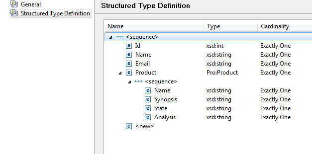

We will use structured data types for our data definitions and their retrieval from the Audit Trail database. Structured data types have to be defined as properties of the workflow model and can then be used as data types during modeling. Please refer to the chapter Structured Data Types of the Modeling Guide for detailed information on working with structured data types.
First we create new structured data types for the ACME Workflow Model:
Figure: Select New Composite.
Now the newly created composite type is visible in the Structured Types tree. Open the properties dialog of the new composite type:
Figure: Open the Composite Properties.
Now we define the structured data type Product:
Figure: Create the Structured Data Type Product.
To create the structured data type Customer, again create a new composite type as described in the preceeding section and proceed as follows:

Figure: Create the Structured Data Type Customer.
Now the data type Customer can be used for the data in our ACME model.